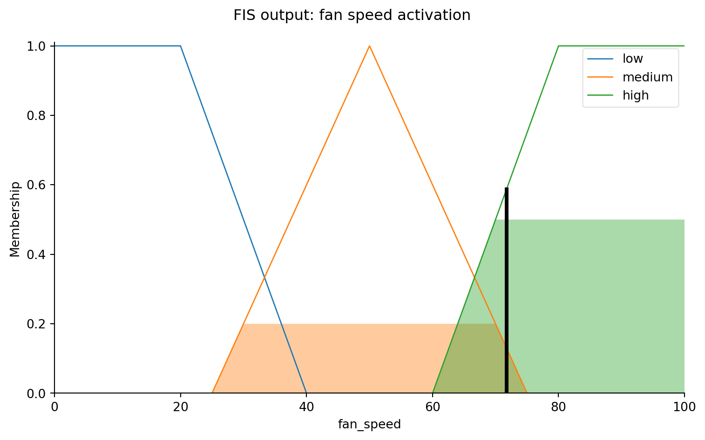

Describe the structure of a fuzzy inference system (FIS) and its three stages
Distinguish between Mamdani and Sugeno inference architectures
Understand defuzzification and why converting back to a crisp value is non-trivial
Build a complete fuzzy inference system using scikit-fuzzy
10.1 The Machine That Thinks in Words
Consider the challenge of designing a controller for a building’s ventilation system. A human facilities manager might describe their rule of thumb like this: “If the temperature is hot and the humidity is high, run the fans fast. If the temperature is comfortable and the humidity is moderate, run the fans slowly.”
A classical engineer would translate these statements into crisp thresholds and piece-wise constant rules. A fuzzy inference system takes a different approach: it encodes the rules in exactly the form the expert stated them — using linguistic variables and fuzzy sets — and handles all the numerical computation underneath.
The result is a controller that behaves with the same graceful continuity that good human judgment shows. It does not snap from “slow fan” to “fast fan” at a precise threshold. It transitions smoothly, exactly as a thoughtful person would.
10.2 Structure of a Fuzzy Inference System
Every FIS operates in three stages:
1. Fuzzification. Convert crisp input values (e.g., temperature = 78°F) into degrees of membership in the relevant fuzzy sets (e.g., “warm” = 0.6, “comfortable” = 0.4).
2. Rule evaluation. Apply the fuzzy rule base. Each rule has the form:
IF temperature IS warm AND humidity IS moderate THEN fan speed IS medium
The antecedents are combined using fuzzy AND (min) or OR (max), and the result is an activation level for the consequent fuzzy set.
3. Defuzzification. Aggregate the activated consequent sets and convert the resulting fuzzy set into a single crisp output value.
10.3 Mamdani vs. Sugeno
Mamdani inference (1974) is the most intuitive architecture. Both inputs and outputs are represented as fuzzy sets. The output is a fuzzy set, which must be defuzzified to yield a crisp value. Mamdani systems are interpretable: you can plot the output fuzzy set and see how the rules combined to produce it.
Sugeno inference (1985) replaces the output fuzzy sets with crisp functions of the inputs. This makes computation faster and analytical results easier to derive, but sacrifices some of the linguistic interpretability.
10.4 Defuzzification
The most common defuzzification method is the centroid (center of mass): find the center of gravity of the output fuzzy set.
Other methods include the mean of maxima (average location of the highest-membership region) and the bisector (the point that divides the area of the output set in half). Each choice gives a slightly different crisp output, and the choice can matter in edge cases.
Temperature: 82°F, Humidity: 70%
Inferred fan speed: 71.7%

Figure 10.1: A simple Mamdani FIS for fan speed control. Given temperature and humidity inputs, the system infers a fan speed.
10.5 Summary
A fuzzy inference system processes crisp inputs through three stages: fuzzification, rule evaluation, and defuzzification.
Rules are stated in natural language (IF-THEN) and evaluated using fuzzy set operations.
Mamdani systems use fuzzy output sets (more interpretable); Sugeno systems use crisp output functions (more efficient).
Defuzzification converts the output fuzzy set back to a single number; the centroid method is the most widely used.
10.6 Further Reading
The original Mamdani paper (An experiment in linguistic synthesis with a fuzzy logic controller, 1975) is readable and shows the engineering motivation clearly. The scikit-fuzzy documentation includes several worked examples. Kosko (1993) provides broader context on why fuzzy systems were controversial and where they found their strongest applications (Japanese consumer electronics, control systems).
Kosko, Bart. 1993. Fuzzy Thinking: The New Science of Fuzzy Logic. Hyperion.
Source Code
---title: "Fuzzy Inference Systems"---::: {.callout-note icon=false}## Learning Objectives- Describe the structure of a fuzzy inference system (FIS) and its three stages- Distinguish between Mamdani and Sugeno inference architectures- Understand defuzzification and why converting back to a crisp value is non-trivial- Build a complete fuzzy inference system using scikit-fuzzy:::## The Machine That Thinks in WordsConsider the challenge of designing a controller for a building's ventilation system. A human facilities manager might describe their rule of thumb like this: *"If the temperature is hot and the humidity is high, run the fans fast. If the temperature is comfortable and the humidity is moderate, run the fans slowly."*A classical engineer would translate these statements into crisp thresholds and piece-wise constant rules. A fuzzy inference system takes a different approach: it encodes the rules in exactly the form the expert stated them — using linguistic variables and fuzzy sets — and handles all the numerical computation underneath.The result is a controller that behaves with the same graceful continuity that good human judgment shows. It does not snap from "slow fan" to "fast fan" at a precise threshold. It transitions smoothly, exactly as a thoughtful person would.## Structure of a Fuzzy Inference SystemEvery FIS operates in three stages:**1. Fuzzification.** Convert crisp input values (e.g., temperature = 78°F) into degrees of membership in the relevant fuzzy sets (e.g., "warm" = 0.6, "comfortable" = 0.4).**2. Rule evaluation.** Apply the fuzzy rule base. Each rule has the form:> IF temperature IS warm AND humidity IS moderate THEN fan speed IS mediumThe antecedents are combined using fuzzy AND (min) or OR (max), and the result is an activation level for the consequent fuzzy set.**3. Defuzzification.** Aggregate the activated consequent sets and convert the resulting fuzzy set into a single crisp output value.## Mamdani vs. Sugeno**Mamdani inference** (1974) is the most intuitive architecture. Both inputs and outputs are represented as fuzzy sets. The output is a fuzzy set, which must be defuzzified to yield a crisp value. Mamdani systems are interpretable: you can plot the output fuzzy set and see how the rules combined to produce it.**Sugeno inference** (1985) replaces the output fuzzy sets with crisp functions of the inputs. This makes computation faster and analytical results easier to derive, but sacrifices some of the linguistic interpretability.## DefuzzificationThe most common defuzzification method is the **centroid** (center of mass): find the center of gravity of the output fuzzy set.$$y^* = \frac{\int y \cdot \mu(y) \, dy}{\int \mu(y) \, dy}$$ {#eq-centroid}Other methods include the mean of maxima (average location of the highest-membership region) and the bisector (the point that divides the area of the output set in half). Each choice gives a slightly different crisp output, and the choice can matter in edge cases.```{python}#| label: fig-fuzzy-fis#| fig-cap: "A simple Mamdani FIS for fan speed control. Given temperature and humidity inputs, the system infers a fan speed."import numpy as npimport skfuzzy as fuzzfrom skfuzzy import control as ctrlimport matplotlib.pyplot as plt# Antecedent (input) variablestemperature = ctrl.Antecedent(np.arange(0, 101, 1), 'temperature')humidity = ctrl.Antecedent(np.arange(0, 101, 1), 'humidity')# Consequent (output) variablefan_speed = ctrl.Consequent(np.arange(0, 101, 1), 'fan_speed')# Membership functions — temperaturetemperature['cool'] = fuzz.trimf(temperature.universe, [0, 20, 45])temperature['comfortable'] = fuzz.trimf(temperature.universe, [30, 50, 70])temperature['warm'] = fuzz.trimf(temperature.universe, [55, 75, 90])temperature['hot'] = fuzz.trapmf(temperature.universe, [80, 90, 100, 100])# Membership functions — humidityhumidity['low'] = fuzz.trapmf(humidity.universe, [0, 0, 20, 40])humidity['medium'] = fuzz.trimf(humidity.universe, [25, 50, 75])humidity['high'] = fuzz.trapmf(humidity.universe, [60, 80, 100, 100])# Membership functions — fan speedfan_speed['low'] = fuzz.trapmf(fan_speed.universe, [0, 0, 20, 40])fan_speed['medium'] = fuzz.trimf(fan_speed.universe, [25, 50, 75])fan_speed['high'] = fuzz.trapmf(fan_speed.universe, [60, 80, 100, 100])# Rulesrule1 = ctrl.Rule(temperature['hot'] | humidity['high'], fan_speed['high'])rule2 = ctrl.Rule(temperature['warm'] & humidity['medium'], fan_speed['medium'])rule3 = ctrl.Rule(temperature['comfortable'], fan_speed['low'])rule4 = ctrl.Rule(temperature['cool'], fan_speed['low'])# Control systemfan_ctrl = ctrl.ControlSystem([rule1, rule2, rule3, rule4])fan_sim = ctrl.ControlSystemSimulation(fan_ctrl)# Test with a specific inputfan_sim.input['temperature'] =82fan_sim.input['humidity'] =70fan_sim.compute()print(f"Temperature: 82°F, Humidity: 70%")print(f"Inferred fan speed: {fan_sim.output['fan_speed']:.1f}%")# Visualize the output membership with activationfan_speed.view(sim=fan_sim)plt.suptitle("FIS output: fan speed activation")plt.tight_layout()plt.show()```## Summary- A fuzzy inference system processes crisp inputs through three stages: fuzzification, rule evaluation, and defuzzification.- Rules are stated in natural language (IF-THEN) and evaluated using fuzzy set operations.- Mamdani systems use fuzzy output sets (more interpretable); Sugeno systems use crisp output functions (more efficient).- Defuzzification converts the output fuzzy set back to a single number; the centroid method is the most widely used.## Further ReadingThe original Mamdani paper (*An experiment in linguistic synthesis with a fuzzy logic controller*, 1975) is readable and shows the engineering motivation clearly. The `scikit-fuzzy` documentation includes several worked examples. @kosko1993fuzzy provides broader context on why fuzzy systems were controversial and where they found their strongest applications (Japanese consumer electronics, control systems).